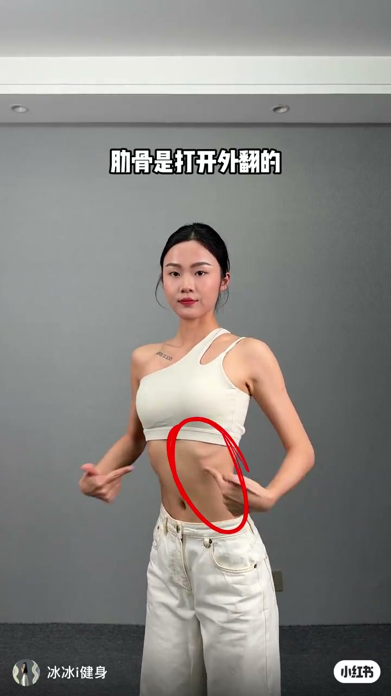
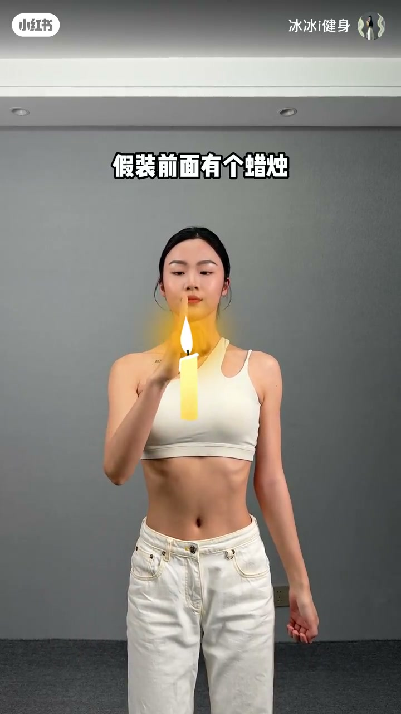
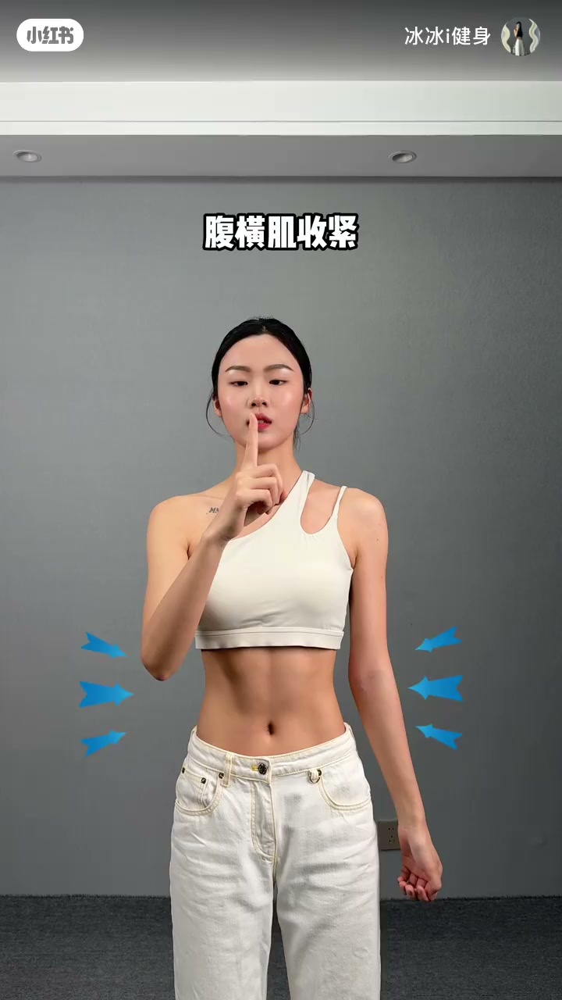
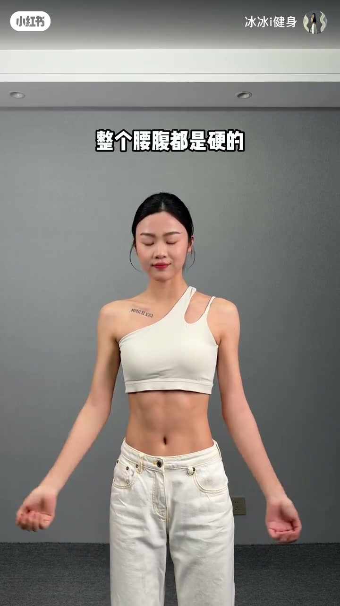

内容要点
这是一条约 23 秒的居家核心纠偏短视频：先否定「吸肚子=收紧核心」，再用三个生活化动作完成体感校准，最后用按压硬度验收。
知识结构
吸肚子时核心是散的；侧面可见肋骨打开外翻——肚子瘪了不等于深层稳定。
假装面前有蜡烛，使劲吹气，让肋骨下沉并向内收，建立肋廓合拢感。
连续咳嗽两声激活腹横肌，再发「嘶」音把张力维持住，避免一咳就松。
正确收紧后整个腰腹摸起来是硬的；视频以「恭喜你学会收紧核心」收束。
正确收紧核心看的是肋廓内收与腰腹整体变硬，而不是把肚子吸空；吹→咳→嘶是一套可自检的入门体感链。
反例 · 00:00–00:05
开场：这是吸肚子，核心是散的
画面里，穿白色单肩运动上衣的 UP 主站在灰墙前，字幕直接写「这是吸肚子」。她把腹部用力吸进去，胸廓却向外鼓；接着双手指向肋缘，红圈标出肋骨打开外翻的区域。
口播点破关键判断：吸肚子时核心是散的，从侧面看肋骨是打开外翻的。视觉上肚子变平，并不等于腹横肌与肋廓协同工作。
原始 Whisper 为繁体转写；「復恆肌」按语境校正为「腹横肌」，「發私的音」校正为发「嘶」的音。完整转录区保留原始识别结果。

第一步 · 00:07–00:11
假装面前有蜡烛，使劲吹气内收肋骨
纠正反例后，视频进入可跟练动作。胸前叠上蜡烛贴纸，UP 主闭眼做用力吹气的动作，口播要求：假装前面有个蜡烛，对着蜡烛使劲吹，肋骨下沉向内收。
重点不是把肚子吸空，而是让肋廓整体往下、往内合拢——把抽象的「收核心」换成谁都能模仿的呼吸意象。

第二、三步 · 00:11–00:17
咳嗽唤醒腹横肌，再发「嘶」音维持
字幕切到「腹横肌收紧」，腰侧出现向内的蓝箭头。UP 主示范连续咳嗽两声——用短促腹压变化把深层横向腹肌「弹」出来。
找到感觉后不能立刻松掉：继续发「嘶」的音，把咳嗽建立的腹压延长成可维持的核心张力。这一步把瞬时激活变成可保持几秒的收紧状态。

验收 · 00:18–00:23
验收：整个腰腹都是硬的
完成三步后，UP 主用手按压腹部，字幕写「整个腰腹都是硬的」——这是本视频给出的体感验收标准：不是只看肚皮是否瘪下去，而是腰腹一圈摸起来有硬度。
结尾一句「恭喜你学会收紧核心」，把短片收束成可复述的结论：反例识别 + 吹蜡烛 + 咳嗽 + 嘶音 + 硬度自检。

跟练复盘
对镜侧身：若肋骨仍外翻，先停在「吸肚子」反例阶段；再按吹→咳→嘶走一遍，最后用手按压腰腹是否整体变硬。本片是入门体感校准，不能替代系统力量训练或医疗评估。